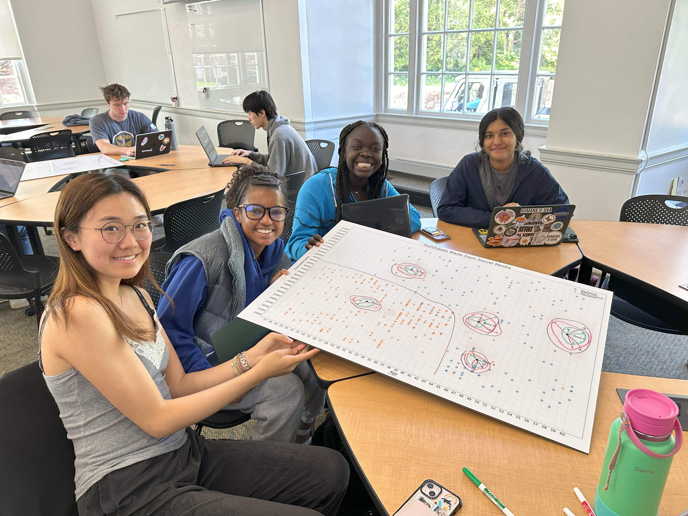
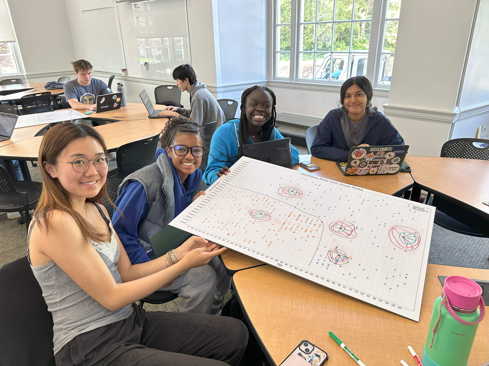

|

|
| Summary | This activity allows students to walk through the k Nearest Neighbor (kNN) machine learning algorithm, a classic first model learned in machine learning, in an easily interpretable, physical space printed onto whiteboards. Using dry erase markers, students walk through kNN, performing the various tasks associated with classifying test points, tuning the hyperparameter, and creating boundaries in space using the data on the board. Then, they respond to questions that require them to communicate their processes and connect their understanding of overfitting/underfitting to their choice of k value. |
| Topics | kNN algorithm, machine learning, overfitting/underfitting, hyperparameter tuning |
| Audience | Introduction to AI, could be adapted to K-12 |
| Difficulty | Easy - given students have the assumed prior knowledge described in the Dependencies section. Otherwise, it is recommended that the questions be altered to reach students’ level of prior knowledge |
| Strengths | This activity is unplugged and gives students an opportunity to gain an understanding of the kNN algorithm in a no-code environment. This activity allows students to explore the algorithm in a familiar, physical space and gain understanding that can be applied when implementing the algorithm in a code environment. It also connects hyperparameter/algorithm tuning to performance visually, rather than numerically, as it is usually seen when implementing kNN in a virtual environment. The activity materials are flexible and could be used to teach multiple facets of kNN and other simple algorithms. |
| Weaknesses | As described in the dependencies section, this activity requires some prior knowledge of foundational machine learning concepts, as well as some prior knowledge/instruction on the kNN algorithm. We have included slides that can be used to introduce these concepts in the Resources section of the materials below. Additionally, creating boundaries lines at this scale requires approximation, so while creating the lines helps students understand the boundaries in space, it is not a perfect representation of how those are made in a ML program. |
| Dependencies | This activity assumes that students have some foundational prior
knowledge of the following terms in the context of data science:
|
| Variants | This activity could be adapted to teach concepts like:
|